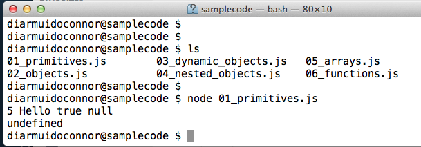
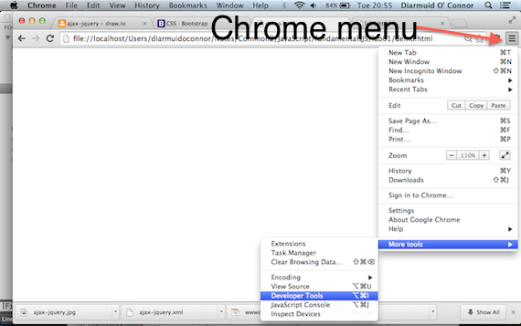
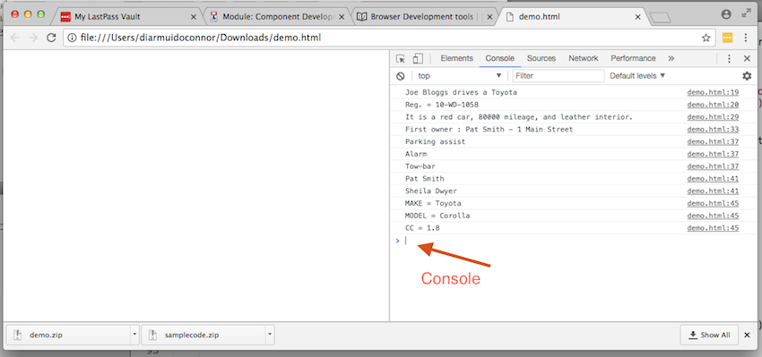
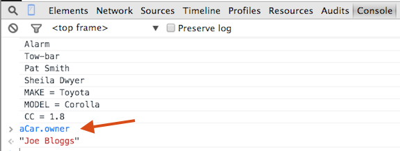
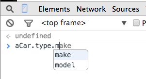
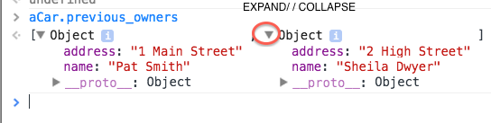

Javascript (JS) Fundamentals - Objects.
By completing a set of small exercises, this lab helps you develop an understanding of the basic syntax and fundamental concepts of the JavaScript language, with particular emphasis on data representation.
Start-up.
Download the sample code (here) supporting the lecture slides and unzip the archive. Open a terminal window (Shell/DOS window) and use the cd command to relocate to this code's base folder (the samplecode folder). Run the first sample script, as follows:
$ node 01_primitives.js[Note: As a convention, the dollar symbol ($) is used to represent the terminal prompt - it is not part of a typed command.]
The screen-shot shows the expected result.

Now examine the code in the script file 02_objects.js and run it:
$ node 02_objects.jsDo you understand how the code generated the response displayed?
Create a new folder (away from samplecode), called lab001, and in it create a file named fundamentals.js. Paste the code below into this file:
let aCar = {
owner : "Joe Bloggs",
type : 'Toyota Corolla 1.8',
registration : '10WD1058'
};
console.log(aCar.owner);Open a second terminal window, go to the lab001 folder and run the script:
$ node fundamentals.js It should display the car owner's name.
Add a git repository to the lab001 folder:
$ git init
$ git add -A
$ git commit -m "Initial structure"Nested Objects.
Before attempting the exercise below, first examine the file 04_1_nested_objects.js from the samples. Run it and ensure you understand how it generated its output.
In fundamentals.js the car's type property is a simple string but structurally it can be broken down into three parts: Make (eg Toyota), Model (eg Corolla), and CC (eg 1.8). You are required to change this property of aCar from a string to an object with three properties, namely make, model and cc. To prove your change worked, add the following log statement to the bottom of the file:
console.log(aCar.owner + ' drives a ' + aCar.type.make);and run it as before:
$ node fundamentals.js It should display: Joe Bloggs drives a Toyota.
(The solution to this exercise is available here under 'Solution 01'.)
Similarly, a car's registration is also composed of three distinct elements; year (10 for 2010), county code (WD for Waterford), and number (1058). You are required to again change aCar to reflect this nested structure. Also add a log statement that displays the following: Reg. = 10-WD-1058.
(The solution is here under 'Solution 02'.)
Before continuing, update the git repository, as follows:
$ git add -A
$ git commit -m "Nested objects"Dynamic properties.
For this section examine 03_dynamic_objects.js from the samples provided. Notice how properties can be dynamically added (employer) and removed (age) after the initialization of the me object. Run it (switch to the other terminal window) and ensure you understand how it generated its output.
In fundamentals.js, after the initialization statement, dynamically add two new properties to aCar, namely:
- mileage - set it to 80000.
- color - this should be an object rather than a primitive value. It should detail exterior color (say, red) and interior fabric. Interior has two attributes, namely, texture (e.g. leather) and shade (e.g. cream).
To test your solution, add a 'console.log' statement at the end of the file that displays the following: It is a red car, 80000 mileage, with leather interior..
(The solution is here under 'Solution 03'.)
Before continuing, update the git repository (from lab001 folder):
$ git add -A
$ git commit -m "Dynamic properties"Arrays.
Examine 05_arrays.js from the samples. Run it and ensure you understand how it generated its output.
In fundamentals.js add a previous owners property to aCar (statically for simplicity), as follows:
let aCar = {
owner : 'Joe Bloggs',
previous_owners : ['Pat Smith - 1 Main Street',
'Sheila Dwyer - 2 High Street'],
. . . . . .
registration : {year : 10, county : 'WD', number : 1058}
} ;This new property is an array of strings. To test it, add a log statement to the bottom of the file, as follows:
console.log('First owner : ' + aCar.previous_owners[0] )and run the code:
$ node fundamentals.js The new log statement displays: First owner : Pat Smith - 1 Main Street.
A better design for previous_owners would be an array of objects, where each object's structure is:
{ name : ' .......', address : '.......'}You are required to change previous_owners to reflect this redesign and also rewrite the log statement so that it still displays the same information.
(The solution is here under 'Solution 04'.)
For completeness, add a property to aCar for the current owner's address, as follows:
let aCar = {
owner : 'Joe Bloggs',
address : '3 Walkers Lane',
previous_owners : ...........
.
.
.
} ;Before continuing, update the git repository:
$ git add -A
$ git commit -m "Arrays"Looping/Iteration constructs.
Suppose the car has a list of extra features. We can represent this as a simple array of strings, as follows:
let aCar = {
owner : 'Joe Bloggs',
.
.
.
features : ['Parking assist',
'Alarm',
'Tow-bar'],
registration : .......
} ;At the end of fundamentals.js, add a for-loop to display this list, as follows:
for (let i = 0 ; i < aCar.features.length ; i += 1) {
console.log(aCar.features[i]) ;
} Run the code to prove it works.
You are required to write a second for-loop that displays the name only (not the address) of each previous owners.
(See Solution 05 for the completed code.)
The loop construct for iterating over an object's properties is slightly different. For example, to display the key-value pairs in the type property of aCar, add the following code at the end of fundamentals.js:
for (let p in aCar.type) {
console.log(p.toUpperCase() + ' = ' + aCar.type[p] ) ;
}Run the code to prove it works.
In the above code the expression aCar.type[p] demonstrates the subscript notation style for accessing an object's properties. The p variable is dereferenced before the expression is evaluated.
e.g.
p = 'make'
aCar.type[p] => aCar.type['make']In all the earlier examples we used the dot notation style, e.g. aCar.type.make), however, it will not work in the above case as dereferencing does not take place - 'aCar.type.p' is undefined.
Update the git repository:
$ git add -A
$ git commit -m "Loop constructs"To prove Git has recorded the above incremental changes, type the command:
$ git logFor more detailed output use:
$ git log -pThe Browser as a Javascript Development tool.
So far we have used the node.js platform to execute JS code. However, the Web Browser was the original JS execution environment. In recent years, browser vendors have added excellent Developer Tools to assist with debugging web applications. The remainder of this lab introduces the developer tools in the Google Chrome browser - other browsers have similar tools. [You should install this browser to complete the lab.]
To demonstrate the tools, we will paste the JS code developed so far into a blank web page. Download this file, unzip it and study the content. Open the demo.html web page in the Chrome browser. Although the page renders as blank, the JS code inside the 'script' tag has been executed. To prove this, open the Developer tools by clicking the Chrome menu icon on the top right and selecting the tools, as illustrated below:

The tools pane appears in the browser window and the Console tab is selected as the default (if not then select it manually). All the log statements from our JS code appear in the console view, as illustrated below:

The Console allows us interact with the JS code by typing statements at the prompt. [In a later lab we will use the console to interact with the current web page]. At the prompt, type the following statement and hit return:
aCar.ownerThe response is illustrated below:

We can also change any object property, for example, type these two statements at the prompt:
aCar.color.exterior = 'blue'
aCar.color.exteriorThe Console attempts to evaluate any JavaScript expression you enter at the prompt. It also provides auto-completion and tab-completion. For example, as you type expressions, property names are automatically suggested (see illustration). If there are multiple properties with the same prefix, pressing the Tab key cycles through them. Pressing the right arrow key accepts the current suggestion.

Notice that the aCar object has a number of properties not explicitly defined by us - see illustration. These are inherited by all objects by default - some are useful.

When a statement execution returns an object rather than a primitive then you can expand the object to see its property detail.

Experiment a while with the tool; it will be useful for debugging application code later in the semester.
Solution 01
let aCar = {
owner : 'Joe Bloggs',
type : {
make : 'Toyota',
model : 'Corolla',
cc : 1.8
},
registration : '10WD1058'
};
console.log(aCar.owner + ' drives a ' + aCar.type.make);Solution 02.
let aCar = {
owner : 'Joe Bloggs,
type : {
make : 'Toyota',
model : 'Corolla',
cc : 1.8
},
registration : {year : 10, county : 'WD', number : 1058}
};
console.log(aCar.owner + ' drives a ' + aCar.type.make);
console.log('Reg. = ' + aCar.registration.year + '-' +
aCar.registration.county + '-' +
aCar.registration.number );Solution 03.
let aCar = {
owner : 'Joe Bloggs',
type : {
make : 'Toyota',
model : 'Corolla',
cc : 1.8
},
registration : {year : 10, county : 'WD', number : 1058}
};
console.log(aCar.owner + ' drives a ' + aCar.type.make);
console.log('Reg. = ' + aCar.registration.year + '-' +
aCar.registration.county + '-' +
aCar.registration.number );
aCar.mileage = 80000;
aCar.color = { exterior : 'red',
interior : { texture : 'leather', shade : 'cream' }
};
console.log('It is a ' + aCar.color.exterior +
' car, ' + aCar.mileage + ' mileage, with ' +
aCar.color.interior.texture + ' interior.');Solution 04.
let aCar = {
owner : 'Joe Bloggs',
previous_owners : [
{ name : 'Pat Smith', address : '1 Main Street'},
{ name : 'Sheila Dwyer', address : '2 High Street'}
],
. . . . . . . . .
registration : {year : 10, county : 'WD', number : 1058}
};
. . . . . . . .
console.log('First owner : ' + aCar.previous_owners[0].name +
' - ' + aCar.previous_owners[0].address );Solution 05.
for (let i = 0 ; i < aCar.previous_owners.length ; i += 1) {
console.log(aCar.previous_owners[i].name);
}